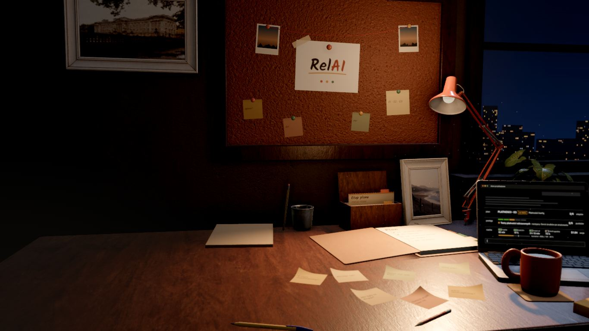
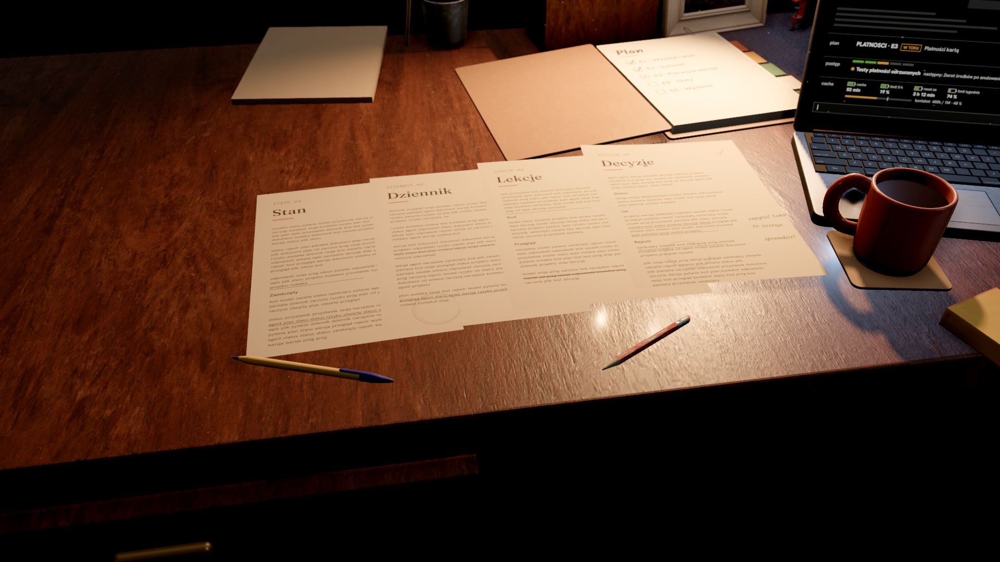
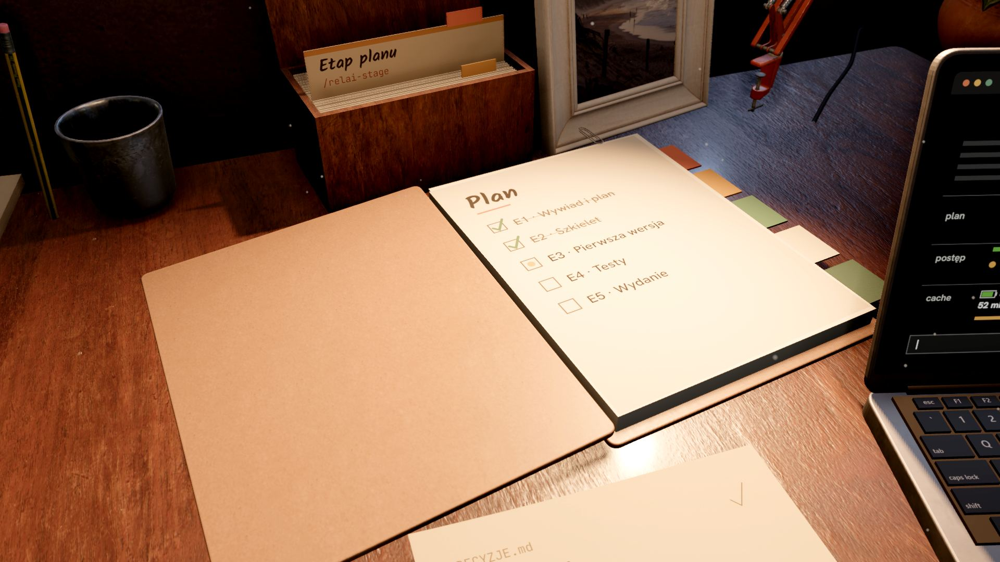
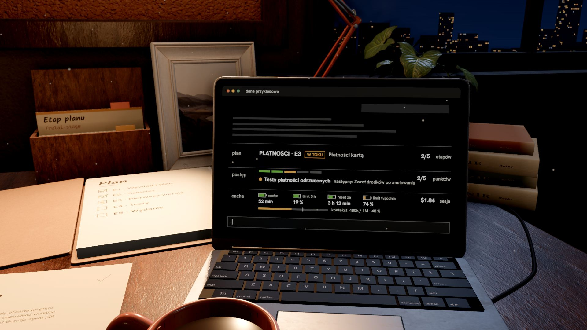
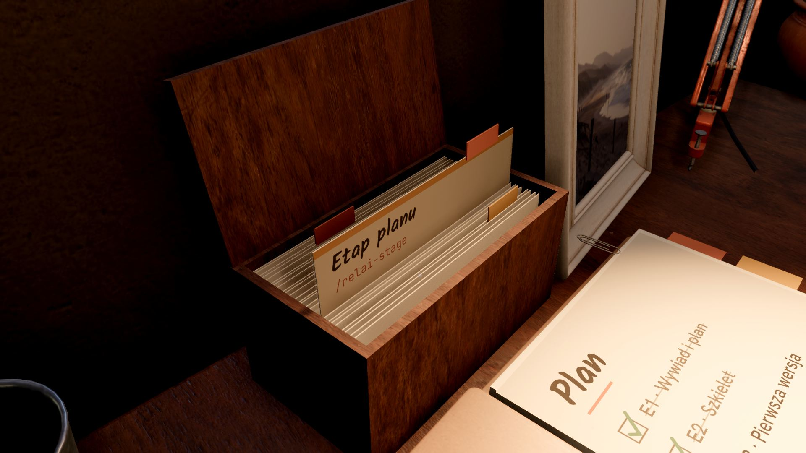

Your project remembers everything.
Plain files beside your code hold what your AI agent forgets. Each new session starts where the last one stopped.
Install
Every session starts from zero.
You explain the project again, hunt for yesterday's decision and fix the same mistake a second time.
Memory lives in files.
State, journal, lessons and decisions are plain Markdown files beside your code. A session reads them at the start and adds to them as you work.

A plan that holds.
Big work goes in stages. Once accepted, the plan is frozen and every stage starts in a fresh session.

It all shows above the prompt.
Bars in the Claude Code window show the plan, the stage's progress, your limits and the session's cost.

15 commands, or plain sentences.
“Let's continue”, “wrapping up”: RelAI understands phrases and has commands for a stage, a side thread, a backup and a review.

Start here.
Pick your tool and parts. Copy the commands, or open them in the terminal and send them yourself with Enter.
You install RelAI on a computer, in Claude Code, Cursor or Codex. Send yourself the link or copy the commands for later.
claude plugin install relai --marketplace nowilus/relai claude plugin install relai-panel@relai claude plugin install relai-cache-keeper@relai